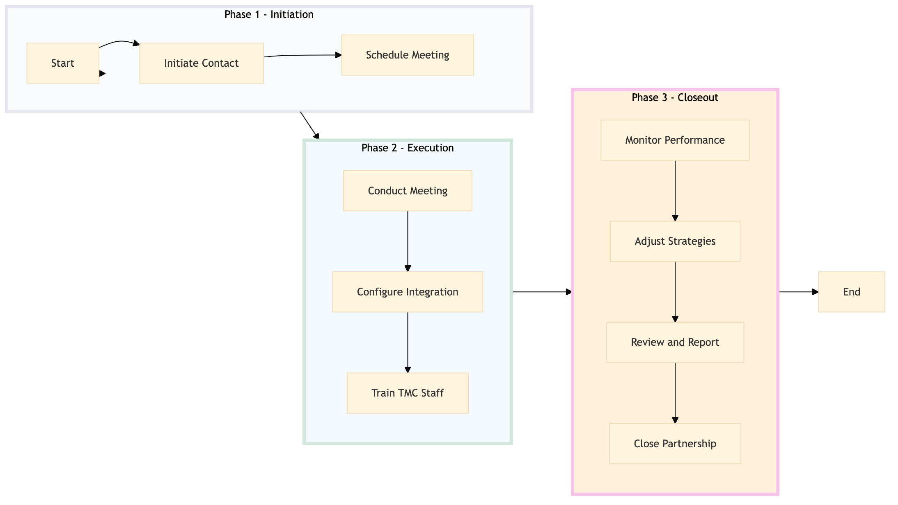

| Role | Steps |
|---|---|
| Sales Executive | 1.1 1.2 2.1 2.3 3.1 3.2 3.3 3.4 |
| Revenue Manager | 2.1 2.2 3.1 3.2 3.3 |
| IT Specialist | 2.2 2.3 |
| Step | Name | Role | System | Input | Output | KPI | Dec? | Exc? | Pain Point / Risk |
|---|---|---|---|---|---|---|---|---|---|
| 1.1 | Initiate Contact | Sales Executive | Oracle OPERA Cloud | TMC contact information | Initial email or phone call notes | < 30 min response time | N | Y | Handling multiple TMCs simultaneously |
| 1.2 | Schedule Meeting | Sales Executive | Book4Time | TMC calendar availability | Scheduled meeting confirmation | < 1 week | N | Y | Conflicting TMC schedules |
| 2.1 | Conduct Meeting | Sales Executive, Revenue Manager | Oracle OPERA Cloud, IDeaS G3 RMS | Meeting agenda, reservation data | Meeting minutes, action items | < 2 hours | Y | Y | Technical issues during the meeting |
| 2.2 | Configure Integration | IT Specialist, Revenue Manager | Oracle OPERA Cloud, SynXis CRS | Integration requirements | Integrated system setup | < 1 week | N | Y | System compatibility issues |
| 2.3 | Train TMC Staff | Sales Executive, IT Specialist | Oracle OPERA Cloud, Book4Time | TMC training materials | Training completion certificates | < 2 days | N | Y | Limited availability of TMC staff |
| 3.1 | Monitor Performance | Revenue Manager, Sales Executive | Oracle OPERA Cloud, Microsoft Power BI | Reservation data, performance metrics | Performance report | < 1 week | Y | Y | Data accuracy issues |
| 3.2 | Adjust Strategies | Sales Executive, Revenue Manager | Oracle OPERA Cloud, Salesforce | Performance report, market trends | Strategy adjustment plan | < 1 week | N | Y | Dynamic market changes |
| 3.3 | Review and Report | Sales Executive, Revenue Manager | Oracle OPERA Cloud, Microsoft Power BI | Strategy adjustment plan, performance data | Final review report | < 1 week | Y | Y | Resource allocation issues |
| 3.4 | Close Partnership | Sales Executive, Revenue Manager | Oracle OPERA Cloud, Book4Time | Final review report | Partnership agreement renewal or termination | < 1 month | Y | Y | Negotiation delays |
This process outlines how a Marriott full-service hotel manages relationships with travel management companies (TMCs) to ensure seamless reservations and loyalty program integration.